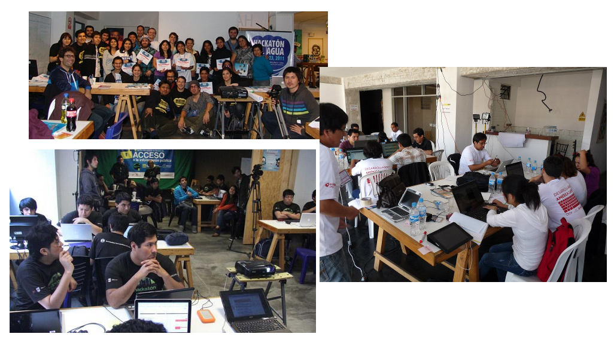
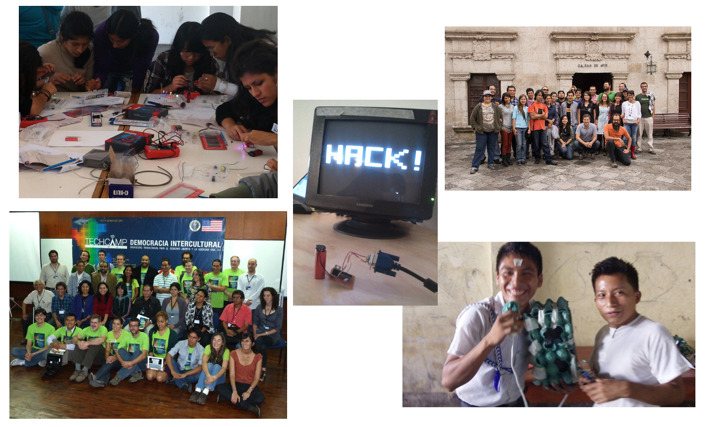

<!DOCTYPE html><html lang="en"></html><head><meta charset="utf-8"><title>escuelab.org: "No hay cambio sin experimento" #enji2013</title><meta name="description" content="Presentación para #enji2013"><meta name="author" content="Mariano Crowe"><meta name="apple-mobile-web-app-capable" content="yes"><meta name="apple-mobile-web-app-status-bar-style" content="black-translucent"><meta name="viewport" content="width=device-width, initial-scale=1.0, maximum-scale=1.0, user-scalable=no"><link rel="stylesheet" href="css/reveal.min.css"><link id="theme" rel="stylesheet" href="css/theme/night.css"><!--<For>syntax highlighting </For>--><link rel="stylesheet" href="lib/css/zenburn.css"><!--<If>the query includes 'print-pdf', use the PDF print sheet </If>--><script>document.write( '<link rel="stylesheet" href="css/print/' + ( window.location.search.match( /print-pdf/gi ) ? 'pdf' : 'paper' ) + '.css" type="text/css" media="print">' );</script><!--[if lt IE 9]><script src="lib/js/html5shiv.js"></script><![endif]--><link rel="stylesheet" href="css/main.css"></head><body><div class="reveal"><!--<Any>section element inside of this container is displayed as a slide </Any>--><div class="slides"><section></section><section><iframe width="950" height="550" frameborder="0" scrolling="no" marginheight="0" marginwidth="0" src="https://maps.google.com/maps?f=d&amp;source=s_d&amp;saddr=Lima,+Departamento+de+Lima,+Per%C3%BA&amp;daddr=Tunuy%C3%A1n,+Mendoza,+Argentina&amp;hl=es-419&amp;geocode=FTgqSP8dxR9o-ylnllMe28gFkTEp2nugilNFTw%3BFaG-__0dIvHi-ylTd6l50CV8ljHDW4_qk2RMPg&amp;aq=0&amp;oq=lima&amp;sll=-22.800103,-70.988824&amp;sspn=25.350182,37.353516&amp;t=h&amp;dirflg=w&amp;mra=ltm&amp;ie=UTF8&amp;ll=-22.917923,-70.839844&amp;spn=82.217166,166.816406&amp;z=3&amp;output=embed"></iframe><br><br><h4>Tunuyán, Mendoza, Argentina</h4><aside class="notes">Tunuyán, un lugar hermoso, pero para un adolescente no pasa nada</aside></section><section><br><br><h4>Tunuyán, Mendoza, Argentina</h4><aside class="notes">Tunuyan es un lugar hermoso, pero no hay ni siquiera una biblioteca municipal</aside></section><section></section><section><h2>curiosidad</h2><h2>cuestionamiento</h2></section><section></section><section><aside class="notes"><ul><li>aprender a pensar pensando</li><li>aprender a experimentar experimentando</li><li>open-source</li><li>con la cantidad de cosas que hay para aprender, por que estoy aprendiendo cosas q no quiero</li></ul><p>1er experimento -- dejar la universidad, comenzar a trabajar</p><ul><li>como practicante aprender solo a través de internet</li></ul></aside></section><section><h2>conocimiento libre</h2><h2>incertidumbre</h2><h2>desafío</h2><h2>aprendizaje bajo demanda</h2><aside class="notes"><p>Muchos experimentos: viajar, y trabajar en empresas grandes, medianas y pequeñas, como freelancer, hacer investigación</p><p>Armar un arsenal de herramientas open source -- la herramienta correcta para el problema indicado</p><p>Principal problema: cuando uno se vuelve funcional a una empresa, tu jefe ya no quiere que hagas otra cosa</p></aside></section><section></section><section><div><h2>monotonía</h2><h2>aburrimiento</h2></div><div class="fragment"><h1>&ne; </h1><h2>libertad</h2><h2>pasión</h2><h2>diversión</h2></div><aside class="notes"><p>Ya nunca más voy a volver a poder trabajar en relación de dependencia</p></aside></section><section class="spaced"><h1><i>&iquest;No será que soy emprendedor?</i></h1></section><section><a href="https://twitter.com/kikomayorga" target="_blank"><p><small>@kikomayorga</small></p></a><a href="http://escuelab.org" target="_blank"><p><small>@escuelab</small></p></a></section><section><section><h2>1er experimento:</h2><h2><a href="https://twitter.com/hablemosquechua" target="_blank">@hablemosquechua</a></h2></section><section class="tweets"><div><blockquote class="twitter-tweet" align="center"><p>La palabra en quechua para &quot;amor&quot; podría ser &quot;khuyay&quot;</p>&mdash; hablemos quechua (@hablemosquechua) <a href="https://twitter.com/hablemosquechua/statuses/319590138407710720">April 3, 2013</a></blockquote>
<script async src="//platform.twitter.com/widgets.js" charset="utf-8"></script>
<blockquote class="twitter-tweet" align="center"><p>Cuando a los incas los hackeaban, ponian cara de preocupación y decian &quot;hackearpariwanchik&quot; via <a href="https://twitter.com/sankaypillo">@sankaypillo</a></p>&mdash; hablemos quechua (@hablemosquechua) <a href="https://twitter.com/hablemosquechua/statuses/378646908291399680">September 13, 2013</a></blockquote>
<script async src="//platform.twitter.com/widgets.js" charset="utf-8"></script></div><aside class="notes">100 followers en 1 hora, 6000+ followers
campaña para san valentin: trending topic en peru y 500 followers en un día</aside></section><section class="tweets"><div><blockquote class="twitter-tweet" align="center"><p>Vecinos, ojo!&#10; ¿Caminar malecón ser peligroso? ¿Qué hará hoy mi alcalde?&#10; <a href="http://t.co/ZKt1HhNJ">http://t.co/ZKt1HhNJ</a></p>&mdash; Lléname tu Agenda (@llenametuagenda) <a href="https://twitter.com/llenametuagenda/statuses/128154511259873280">October 23, 2011</a></blockquote>
<script async src="//platform.twitter.com/widgets.js" charset="utf-8"></script>
<blockquote class="twitter-tweet" align="center"><p>Vecinos, en este momento.&#10; Atropellaron a un chico en la esquina.&#10; ¿Qué hizo la semana pasada mi alcalde?&#10; <a href="http://t.co/txIqOwxH">http://t.co/txIqOwxH</a></p>&mdash; Lléname tu Agenda (@llenametuagenda) <a href="https://twitter.com/llenametuagenda/statuses/126543663668019202">October 19, 2011</a></blockquote>
<script async src="//platform.twitter.com/widgets.js" charset="utf-8"></script></div><aside class="notes">100 followers en 2 meses, 2 años despues tiene 200</aside></section><section class="spaced"><h3>&iquest; Qué aprendimos?</h3><ul><li><h2>poesía</h2></li><li><h2>humanización</h2></li></ul></section></section><section><section><h2>2ndo experimento:</h2><h2>Hackatones y open data</h2></section><section><aside class="notes">Hace 2 años comenzamos con la muni lima. El año pasado hicimos la hackatón de lima, este año la está organizando independientemente con los entregables de nuestro estudio</aside></section><section class="spaced"><h3>&iquest; Qué aprendimos?</h3><ul><li><h2>es un proceso</h2></li><li><h2>es replicable</h2></li><li><h2>faltan datos abiertos</h2></li><li><h2>sobra talento</h2></li></ul></section></section><section><section><h2>3er experimento:</h2><h2>Apropiación tecnológica</h2></section><section><aside class="notes">trabajamos con adolescentes, jovenes y ongs
los procesos con los jóvenes fueron un éxito
los procesos de las ongs quedaron truncos, porque sus problemas son demasiados comunes y aburridos</aside></section><section class="spaced"><h3>&iquest; Qué aprendimos?</h3><ul><li><h2>los jóvenes son más ágiles</h2></li><li><h2>la
<big>diversión</big>
es fundamental</h2></li><li><h2>la apropiación no se puede tercerizar :P</h2></li><li><h2>el aprendizaje entre pares funciona</h2></li></ul></section></section><section><section><h2>4to experimento:</h2><h2>Coworking</h2><aside class="notes"><ul><li>intentamos de todo</li><li>promociones</li><li>talleres</li><li>parrilladas</li><li>pero tuvimos que cerrar el espacio porque ya no podiamos mantenerlo</li><li>hoy estamos sin espacio y sin todavía saber si queremos uno</li></ul></aside></section><section class="spaced"><h3>&iquest; Qué aprendimos?</h3><ul><li><h2>el centro de lima no es ideal</h2></li><li><h2>espacios desaprovechados</h2></li><li><h2>gente chévere &gt; espacio físico</h2></li></ul></section></section><section><h3>formas alternativas de aprendizaje</h3><br><h2>aprendizaje experimental</h2><h2>aprendizaje entre pares</h2><h2>aprendizaje bajo demanda</h2></section><section data-transition="none"><h2>&nbsp;</h2><div style="float: left"><ul><li><h3>curiosidad</h3></li><li><h3>cuestionamiento</h3></li><li><h3>experimentación</h3></li><li><h3>desafío</h3></li><li><h3>conocimiento libre</h3></li></ul></div><div style="float: right"><ul><li><h3>incertidumbre</h3></li><li><h3>pasión</h3></li><li><h3>libertad</h3></li><li><h3>creatividad</h3></li><li><h3>diversión</h3></li></ul></div></section><section data-transition="none" style="clear: both;"><h2>Valores del HACKER</h2><div style="float: left"><ul><li><h3>curiosidad</h3></li><li><h3>cuestionamiento</h3></li><li><h3>experimentación</h3></li><li><h3>desafío</h3></li><li><h3>conocimiento libre</h3></li></ul></div><div style="float: right"><ul><li><h3>incertidumbre</h3></li><li><h3>pasión</h3></li><li><h3>libertad</h3></li><li><h3>creatividad</h3></li><li><h3>diversión</h3></li></ul></div></section><section class="spaced"><h2><i>"Un hacker es aquel que trabaja con gran pasión y entusiasmo por lo que hace."</i></h2><br><h4>Pekka Himanen,
<i>La ética del hacker y el espíritu de la era de la información</i></h4></section><section><h2>Los emprededores</h2><h2 class="fragment">somos</h2><h1 class="fragment">hackers</h1></section><section><h2>Valores del HACKER</h2><div style="float: left"><ul><li><h3>curiosidad</h3></li><li><h3>cuestionamiento</h3></li><li><h3>experimentación</h3></li><li><h3>desafío</h3></li><li><h3>conocimiento libre</h3></li></ul></div><div style="float: right"><ul><li><h3>incertidumbre</h3></li><li><h3>pasión</h3></li><li><h3>libertad</h3></li><li><h3>creatividad</h3></li><li><h3>diversión</h3></li></ul></div></section><section><h1>No hay cambio sin experimento</h1><h3>La experiencia de<a href="http://escuelab.org" target="_blank">escuelab.org</a></h3><p><small>Mariano Crowe
/<a href="http://twitter.com/escuelab">@escuelab</a>/
<iframe src="http://ghbtns.com/github-btn.html?user=merunga&repo=enji2013&type=follow" allowtransparency="true" frameborder="0" scrolling="0" width="150" height="25"></iframe></small></p><p><small><a href="http://creativecommons.org/licenses/by-sa/3.0/deed.es_CO" target="_blank"></a></small></p></section></div></div><script src="lib/js/head.min.js"></script><script src="js/reveal.min.js"></script><script>// Full list of configuration options available here:
// https://github.com/hakimel/reveal.js#configuration
Reveal.initialize({
  controls: true,
  progress: true,
  history: true,
  center: true,
  theme: Reveal.getQueryHash().theme, // available themes are in /css/theme
  transition: Reveal.getQueryHash().transition || 'linear', // default/cube/page/concave/zoom/linear/fade/none
  // Optional libraries used to extend on reveal.js
  dependencies: [
    { src: 'lib/js/classList.js', condition: function() { return !document.body.classList; } },
    { src: 'plugin/markdown/marked.js', condition: function() { return !!document.querySelector( '[data-markdown]' ); } },
    { src: 'plugin/markdown/markdown.js', condition: function() { return !!document.querySelector( '[data-markdown]' ); } },
    { src: 'plugin/highlight/highlight.js', async: true, callback: function() { hljs.initHighlightingOnLoad(); } },
    { src: 'plugin/zoom-js/zoom.js', async: true, condition: function() { return !!document.body.classList; } },
    { src: 'plugin/notes/notes.js', async: true, condition: function() { return !!document.body.classList; } }
  ]
});</script></body>